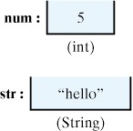
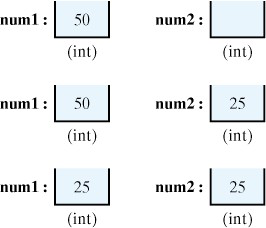

Activity 1.5.1.
Run the following code. Try changing the greeting to "Hola!" and run again.
HelloWorld application program./*
* File: HelloWorld.java
* Author: Java Java Java
* Description: Prints Hello, World! greeting.
*/
public class HelloWorld extends Object // Class header
{ // Start class body
private String greeting = "Hello, World!";
public void greet() // Method definition
{ // Start method body
System.out.println(greeting); // Output statement
} // greet() // End method body
public static void main(String args[])// Method header
{
HelloWorld helloworld; // declare
helloworld = new HelloWorld(); // create
helloworld.greet(); // Method call
} // main()
} // HelloWorld // End class body
HelloWorld program is the use of comments. A comment is a non-executable portion of a program that is used to document the program. Because comments are not executable instructions they are just ignored by the compiler. Their sole purpose is to make the program easier for the programmer to read and understand.
HelloWorld program contains examples of two types of Java comments. Any text contained within /* and */ is considered a comment. As you can see in HelloWorld, this kind of comment can extend over several lines and is sometimes called a multiline comment. A second type of comment is any text that follows double slashes (//) on a line. This is known as a single-line comment because it cannot extend beyond a single line.
/* This first comment begins and ends on the same line. */
/* A second comment starts on this line ...
and goes on ...
and this is the last line of the second comment.
*/
/* A third comment starts on this line ...
/* This is NOT a fourth comment. It is just
part of the third comment.
And this is the last line of the third comment.
*/
*/ This is an error because it is an unmatched end marker.
HelloWorld, the program begins with a comment block that identifies the name of file that contains the program and its author and provides a brief description of what the program does.
HelloWorld program to provide a running commentary of its language elements.
HelloWorld ( Listing 1.5.1). Notice how beginning and ending braces, { and }, are aligned, and note how we use single-line comments to annotate ending braces. Braces are used to mark the beginning and end of different blocks of code in a Java program and it can sometimes be difficult to know which beginning and end braces are matched up. Proper indentation and the use of single-line comments make it easier to determine how the braces are matched up.
HelloWorld class are indented inside of the braces that mark the beginning and end of the class. And the statements in the main() method are indented to indicate that they belong to that method. Use of indentation in this way, to identify the program’s structure, makes the program easier to read and understand.
abstract |
continue |
for |
new |
switch |
assert |
default |
goto* |
package |
synchronized |
boolean |
do |
if |
private |
this |
break |
double |
implements |
protected |
throw |
byte |
else |
import |
public |
throws |
case |
enum |
instanceof |
return |
transient |
catch |
extends |
int |
short |
try |
char |
final |
interface |
static |
void |
class |
finally |
long |
strictfp |
volatile |
onst* |
float |
native |
super |
while |
class, extends, private, public, static, and void.
thisVar and ThisVar are two different identifiers.
HelloWorld and TextField.
main(), greeting, greet(), getQuestion(), and getAnswer().
String and PrintStream objects.
int for one integer type, double for one real number type, and boolean.
int variable can store values like 5 or -100. A String variable can store values like “Hello”. 
int variable can only store whole numbers and a String can only store strings.HelloWorld class (Listing 1.5.1), the instance variable greeting (line 8) stores a value of type String. In the main() method, the variable helloworld is assigned a HelloWorld object (line 16).
String literal. A number such as 45.2 would be an example of a literal of type double, and -72 would be an example of a literal of type int.
String.
HelloWorld program (Listing 1.5.1), statements of various types occur on lines 8, 11, 15, 16, and 17. Notice that all of these lines end with a semicolon.
int,double, or boolean, or for objects, it is the name of the object’s class, such as String or HelloWorld. Here are some examples:
HelloWorld helloworld;
int num1;
int num2;
helloworld of type HelloWorld. The next two declarations declare int variables named num1 and num2.
int value, such as 25 or 1000.
=) is used as the assignment operator.
num1 = 50; // (a) Assign 50 to num1
num2 = 10 + 15; // (b) Assign 25 to num2
num1 = num2; // (c) Copy num2's value (25) into num1
num1, resulting in the situation shown in the top row of Figure 1.5.12.

num1 and num2 as a result off the three assignments, (a), (b) and (c).num2, leading to the situation shown in in row two of the figure. In (c) the value on the right hand side is 25, the value of num2, which is stored in num1, as depicted in row three of the drawing.
num1 equals num2. But, remember, the equal sign is the assignment operator. So, this statement is saying: take the value stored in num2 and store it in num1.
HelloWorld program (Listing 1.5.1):
helloworld.greet(); // Call HelloWorld's greet() method
System.out.println(greeting);// Call System.out's println() method
greet() method, which will perform certain actions for us. In the second, we are calling the system’s println() method to display a greeting on the computer screen. We will discuss these kinds of statements in greater detail as we go along.
main() method.
public static void main(String args[])// Method header
{
HelloWorld helloworld; // declare
helloworld = new HelloWorld(); // create
helloworld.greet(); // Method call
} // main()
int values, such as \(5 + 10\text{,}\) the expression itself produces an int result. When comparing two numbers with the less than operator, \(num1 \lt num2\text{,}\) the expression itself produces a boolean type, either true or false.
num = 7 // An assignment expression of type int
num = square(7) // An method call expression of type int
num == 7 // An equality expression of type boolean
7, because it is assigning 7 to num. The second example is also an assignment expression, but this one has a method call, square(7), on its right hand side. (We can assume that a method named square() has been appropriately defined in the program.) A method call is just another kind of expression. In this case, it has the value 49. Note that an assignment expression can be turned into a stand-alone assignment statement by placing a semicolon after it.
true, assuming that the variable on its left is storing the value 7. It is important to note the difference between the assignment operator (\(=\)) and the equality operator (\(==\)).
= and ==. The symbol = is the assignment operator. It assigns the value on its right-hand side to the variable on its left-hand side. The symbol == is the equality operator. It evaluates whether the expressions on its left- and right-hand sides have the same value and returns either true or false.
num will have the value after the following two statements are executed: int num = 11;
num = 23 - num;
int variable named num2 and assigns it an initial value of 0: .
HelloWorld example, we are defining the HelloWorld class, but there are also three predefined classes involved in the program. These are the Object,String, and System classes all of which are defined in the Java class library. Predefined classes, such as these, can be used in any program.
HelloWorld program’s comments indicate, a class definition has two parts: a class header and a class body. In general, a class header takes the following form, where the parts marked \(_{opt}\) are optional.
HelloWorld class is:
public class HelloWorld extends Object
HelloWorld), identify its accessibility (public as opposed to private), and describe where it fits into the Java class hierarchy (as an extension of the Object class).
public, which declares that this class can be accessed by any other classes. The next part of the declaration identifies the name of the class, HelloWorld. And the last part declares that HelloWorld is a subclass of the Object class. We call this part of the definition the class’s pedigree.
Object class is the top class of the entire Java hierarchy. By declaring that HelloWorld extends Object, we are saying that HelloWorld is a direct subclass of Object. In fact, it is not necessary to declare explicitly that HelloWorld extends Object because that is Java’s default assumption. That is, if you omit the extends clause in the class header, Java will automatically assume that the class is a subclass of Object.
HelloWorld class has a single instance variable, (greeting), which is declared as follows:
private String greeting = "Hello, World!";
[Modifiers] Type VariableName [InitializerExpression]
greeting variable, we use the optional access modifier, private, to declare that greeting can only be accessed in the HelloWorld class; it cannot be directly accessed by other objects.
String), which means that it can store a string object. The type is followed by the name of the variable (greeting), which can be used throughout the HelloWorld class. For example, notice that greeting is used on line 11 in a println() statement.
greeting variable.
HelloWorld program has two method definitions: the greet() method and the main() method.
[Modifiers] ReturnType MethodName ([ParameterList])
greet() method on line 9 uses the access modifier, public, to declare that this method can be accessed or referred to by other classes.
HelloWorld have a return type of void. This means that they don’t return anything. Void methods just execute the sequence of statements given in their bodies. We’ll see examples of methods that return values in the next chapter.
greet() method is called on line 17.
greet() method, do not have parameters, because they are not passed any information. For an example of a method that does have parameters, see the Riddle() constructor, which contains parameters for the riddle’s question and answer (Listing 1.3.9).
greet() method,
System.out.println(greeting); // Output statement
main() method, which is where the program begins execution when it is run. For a program that contains several classes, it is up to the programmer to decide which class should contain the main() method. We don’t have to worry about that decision for HelloWorld, because it contains just a single class.
HelloWorld class:
public static void main(String args[])
public so it can be accessed from outside the class that contains it. And it must be declared static. Static methods are associated with their class, not with the class’s objects or instances. Because of this, a static or class method can be called before the program has created any instances (or objects) of that class.
main()’s special role as the program’s starting point, because main() is called by the Java runtime system before the program has created any objects.
main()’s parameter list contains a declaration of some kind of String parameter named args. This is actually an array that can be used to pass string arguments to the program when it is started up. We won’t worry about this feature until our chapter on arrays.
main() method is where the HelloWorld program creates its one and only object. When it is run the HelloWorld program simply prints “Hello World!” on the console. In order for this action happen, the program needs to call the greet() method.
greet() method is an instance method that belongs to a HelloWorld object, we first need to create a HelloWorld instance. This is what happens in the body of the main() method:
HelloWorld helloworld; // Variable declaration
helloworld = new HelloWorld(); // Object instantiation
helloworld.greet(); // Method invocation
HelloWorld, which is then assigned a HelloWorld object.
HelloWorld object by invoking HelloWorld’s default constructor: HelloWorld(). A default constructor has the same name as the class and merely creates an object of that class. It is defined automatically by Java and looks like this:
public HelloWorld() { } // Default constructor
HelloWorld instance is created, we can use one of its instance methods to perform some task or operation.
greet() method, which will print “Hello World!” on the console.
HelloWorld program (Listing 1.5.1)illustrates the idea that an object-oriented program is a collection of interacting objects. Although we create just a single HelloWorld object in the main() method, there are two other objects used in the program. One is the greeting object, the “Hello, World!” String. The other is the System.out object, which is a special Java system object used for printing.
HelloWorldCanvas. This program does more or less the same thing as the HelloWorld application— it displays the “Hello, World!” greeting. The difference is that it displays the greeting within a Window rather than directly on the console.
HelloWorldCanvas program./** File: HelloWorldCanvas program */
import javax.swing.JFrame; // Import class names
import java.awt.Graphics;
import java.awt.Canvas;
public class HelloWorldCanvas extends Canvas // Class header
{
// Start of body
public void paint(Graphics g) // The paint method
{
g.drawString("Hello, World!", 10, 10);
} // End of paint
public static void main(String[] args) // The main() method
{ HelloWorldCanvas c = new HelloWorldCanvas();
JFrame f = new JFrame();
f.add(c);
f.setSize(150,50);
f.setVisible(true);
} // End of main
} // End of HelloWorldCanvas
HelloWorld console application program, HelloWorldCanvas consists of a class definition. It contains a single method definition, the paint() method, which contains a single executable statement:
g.drawString("Hello, World!",10,10);
drawString() method is one of the many drawing and painting methods defined in the Graphics class. Every Java Canvas comes with its own Graphics object, which is referred to here simply as g. Thus, we are using that object’s drawString() method to draw on the window. Don’t worry if this seems a bit mysterious now. We’ll explain it more fully when we take up graphics examples again.
HelloWorldCanvas class also contains some elements, such as the import statements, that we did not find in the HelloWorld application. We will now discuss those features.
HelloWorld program used two pre-defined classes, the String and the System classes. Both of these classes are basic language classes in Java. The HelloWorldCanvas program also uses pre-defined classes, such as JFrame and Graphics. However, these two classes are not part of Java’s basic language classes. To understand the difference between these classes, it will be necessary to talk briefly about how the Java class library is organized.
java.lang package contains classes, such as Object,String, and System, that are central to the Java language. Just about all Java programs use classes in this package. The java.awt package provides classes, such as Button,TextField, and Graphics, that are used in graphical user interfaces (GUIs). The java.net package provides classes used for networking tasks, and the java.io package provides classes used for input and output operations.
package statement as the first statement in the file that contains the class definition. For example, the files containing the definitions of the classes in the java.lang package all begin with the following statement.
package java.lang;
package statement, as we do for the programs in this book, Java places such classes into an unnamed default package.
System class is java.lang.System and the full name for the String class is java.lang.String. Similarly, the full name for the Graphics class is java.awt.Graphics. In short, the full name for a Java class takes the following form:
package.class
java.lang package can be refererced by their shorthand names. This means that when a program uses a class from the java.lang package, it can refer to it simply by its class name. For example, in the HelloWorld program we referred directly to the String class rather than to java.lang.String.
import Statement
import statement makes Java classes available to programs under their abbreviated names. Any public class in the Java class library is available to a program by its fully qualified name. Thus, if a program was using the Graphics class, it could always refer to it as java.awt.Graphics. However, being able to refer toGraphics by its shorthand name, makes the program a bit shorter and more readable.
import statement doesn’t actually load classes into the program. It just makes their abbreviated names available. For example, the import statements in HelloWorldCanvas allow us to refer to the JFrame,Canvas, and Graphics classes by their abbreviated names (Listing 1.5.16).
import statements in HelloWorldCanvas are examples of the first form. The following example,
import java.lang.*;
java.lang package to be referred to by their class names alone. In fact, this particular import statement is implicit in every Java program.
java.awt, class names, such as javax.swing.JFrame, and even method names, such as helloworld.greet().
helloworld.greet() refers to the greet() method, which belongs to the HelloWorld class. If we were using this expression from within that class, you wouldn’t need to qualify the name in this way. You could just refer to greet() and it would be clear from the context which method you meant.
java.lang.System refers to the System class in the java.lang package.